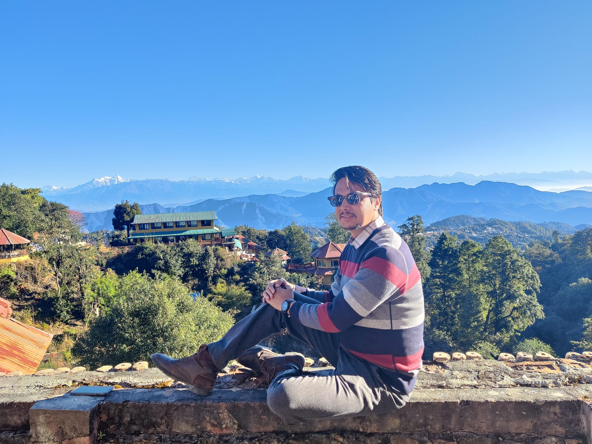

Structural & Earthquake Engineering
Kishor Timsina, PhD
Assistant Professor at MBUST working across seismic resilience, structural health monitoring, numerical model updating, retrofitting, Applied Element Method, and sustainable structural materials.
- Current Role
- Assistant Professor, MBUST
- Doctorate
- The University of Tokyo
- Focus
- Safer, resilient infrastructure
About
Researcher, educator, and practitioner for resilient structures.
Dr. Kishor Timsina is an Assistant Professor and Coordinator of the Sustainable and Resilient Infrastructure Program at Madan Bhandari University of Science and Technology (MBUST), where he also serves as a Member of the Executive Council.
His work connects rigorous numerical modelling with field realities in Nepal and the region: vulnerable reinforced concrete and masonry buildings, seismic retrofitting, vibration-based model updating, Applied Element Method development, soil-structure interaction, bamboo and forest biomaterials, and multi-hazard risk reduction.

Research Areas
Engineering tools for existing, vulnerable, and sustainable structures.
Seismic Performance of Existing Structures
Masonry, reinforced concrete, rural buildings, heritage structures, and forest or bio-material systems.
Structural Health Monitoring
Operational modal data, vibration-based model updating, damage detection, and data-driven assessment.
Retrofitting Methodologies
Experimental and numerical strategies for improving vulnerable buildings while respecting local constraints.
Applied Element Method
Development, improvement, and application of 2D and 3D AEM for structural engineering problems.
Bamboo & Forest Biomaterials
Structural characterization and durable applications of bamboo, timber, and related sustainable materials.
Multi-Hazard Risk Reduction
Building code implementation, post-earthquake and post-fire assessment, preparedness, and resilient policy support.
Experience
From field implementation to research leadership.
Assistant Professor & Coordinator, Sustainable and Resilient Infrastructure Program
Madan Bhandari University of Science and Technology (MBUST). Leads teaching, supervision, research projects, and academic program coordination in resilient infrastructure.
Structural Engineer / Deputy Program Manager
National Society for Earthquake Technology-Nepal (NSET). Coordinated technical support for resilient communities, multi-hazard risk reduction, building permit systems, and retrofitting work.
Civil Engineer / Program Coordinator
NSET. Worked on building code implementation, damage assessment after the 2015 Nepal earthquake, seismic vulnerability assessment, trainings, and earthquake-resistant construction.
Education
Academic training in Nepal and Japan.
Doctoral Degree in Civil Engineering
The University of Tokyo. Thesis: Development of Model Updating in 3D AEM to Improve the Numerical Modeling of Existing RC Frame Buildings.
Master's Degree in Civil Engineering
The University of Tokyo. Thesis: Optimized retrofitting of soft-storey RC buildings in Nepal using numerical optimization.
Bachelor's Degree in Civil Engineering
Institute of Engineering, Pulchowk Campus, Tribhuvan University. Final-year thesis on earthquake-resistant building analysis and design.
Selected Publications & Talks
Work spanning soft-storey mitigation, AEM, structural health monitoring, and resilient materials.
Retrofitting solution for soft story mitigation in reinforced concrete frame buildings
Journal of Earthquake and Tsunami, 2024.
Sociotechnical evaluation of the soft story problem in reinforced concrete frame buildings in Nepal
Journal of Performance of Constructed Facilities, 2021.
Enhancing Seismic Resilience of Soft-Storey Buildings through Optimized Reinforced Concrete Infill Solutions
Engineered Science, 2025.
Shaking table tests of a one-quarter scale model of concrete hollow block masonry houses
Scientific Reports, 2024.
Upgradation of 2D applied element method for soil-structure interaction
Progress in Engineering Science, 2025.
Projects & Funding
Current work connects sustainable materials, heritage reconstruction, and resilient communities.
Sustainable and Resilient Reconstruction of Traditional Stone Masonry Buildings in Mud Mortar
Research grant supporting resilient reconstruction approaches for traditional stone masonry buildings.
Structural Characterization of Bambusa balcooa and Bambusa nutans
Experimental research for bamboo species used in structural applications.
Research and Development in Bamboo-Related Structural Applications
Long-term partnership for sustainable bamboo research and development.
Teaching & Supervision
Graduate teaching and research mentorship.
Courses
- Applied Element Modelling of Structures
- Finite Element Modelling of Structures
- Structural Evaluation and Retrofitting Methods
- Advanced Structural Dynamics and Vibration Control
- Fundamentals of Forest Biomaterials Science
Supervision Themes
- Bamboo characterization for structural applications
- Seismic safety of stone masonry homestays
- Soft-storey retrofitting and masonry infill frames
- Data-driven numerical model updating using ANN
- Large-deformation AEM solver development
Recognition
Scholarships, awards, and professional service.
Furuichi-Kimitake Prize
Outstanding Master's Thesis, The University of Tokyo, 2019.
MEXT Scholarship
Doctoral Degree, The University of Tokyo, 2020 - 2023.
ADB-JSP Scholarship
Master's Degree, The University of Tokyo, 2017 - 2019.
Technical Committee Service
Fire damage assessment guidelines, bamboo design standards, and research publication activities in Nepal.
Contact
For research collaboration, supervision, talks, and resilient infrastructure work.